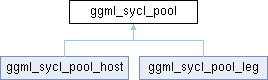

Neura
Gesture and voice-controlled desktop assistant
Loading...
Searching...
No Matches
ggml_sycl_pool Struct Reference
abstract
Inheritance diagram for ggml_sycl_pool:

Public Member Functions
virtual void *
alloc
(size_t size, size_t *actual_size)=0
virtual void
free
(void *ptr, size_t size)=0
The documentation for this struct was generated from the following file:
whisper.cpp/ggml/src/ggml-sycl/
common.hpp
ggml_sycl_pool
Generated by
1.16.1
 1.16.1
1.16.1